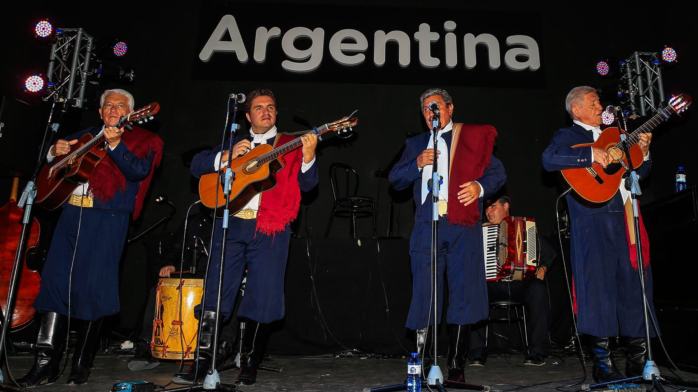
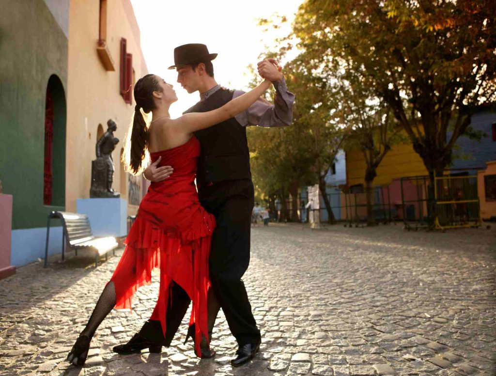

Literatura
La literatura argentina es un reflejo vibrante de su rica y compleja cultura. Desde los gauchos y la pampa en el siglo XIX, hasta las exploraciones urbanas y existenciales del siglo XX, la literatura ha sido un espacio donde se debate la identidad nacional, se exploran las tensiones sociales y se celebra la diversidad cultural. Autores como Jorge Luis Borges, Julio Cortázar y Ernesto Sabato han dejado un legado imborrable, mientras que voces contemporáneas continúan expandiendo los límites de la narrativa y la poesía, manteniendo viva la tradición literaria argentina.
Los libros mas Famosos de la Literatura Argentina
-
Martín Fierro de José Hernández
Un poema épico que narra la vida de un gaucho y su lucha contra la injusticia.
-
Ficciones de Jorge Luis Borges
Una colección de cuentos que exploran temas como la realidad, la identidad y el tiempo.
-
Rayuela de Julio Cortázar
Una novela experimental que desafía las convenciones narrativas y explora la naturaleza de la realidad.
-
El túnel de Ernesto Sabato
Una novela psicológica que explora la obsesión y la soledad.
-
Operación Masacre de Rodolfo Walsh
Una novela de no ficción que investiga los fusilamientos clandestinos de civiles durante un levantamiento militar.
Musica

La música argentina es un tapiz sonoro diverso que refleja la rica historia y la identidad multifacética del país. Desde el tango apasionado que nació en los arrabales de Buenos Aires hasta el folclore que resuena en las vastas llanuras y las montañas andinas, la música ha sido una forma de expresión cultural arraigada en la vida cotidiana. El tango, con su melancolía y sensualidad, ha trascendido fronteras y se ha convertido en un símbolo de Argentina en todo el mundo. El folclore, con sus diferentes ritmos y estilos regionales, celebra las tradiciones y las raíces de los pueblos originarios y los inmigrantes que llegaron al país. El rock nacional, nacido en la década de 1960, se convirtió en una voz de resistencia y expresión juvenil durante los tiempos difíciles de la dictadura militar. Además de estos géneros tradicionales, la música argentina contemporánea abarca una amplia gama de estilos, desde el pop y el rock hasta la cumbia y el trap, que reflejan la diversidad y la vitalidad de la cultura argentina actual.
Instrumentos
La rica y diversa cultura argentina se expresa a través de una variedad de instrumentos musicales, cada uno con su propia historia y significado. Aquí hay algunos de los más destacados:
-
Bandoneón:
Este instrumento de viento y teclado, originario de Alemania, se convirtió en el alma del tango. Su sonido melancólico y apasionado evoca la esencia de Buenos Aires y sus arrabales.
-
Guitarra:
La guitarra es un instrumento fundamental en la música argentina, presente en una amplia gama de géneros, desde el folclore hasta el tango y el rock nacional.
-
Bombo legüero:
Este tambor de gran tamaño, hecho de un tronco ahuecado y cuero de animal, es el corazón del folclore argentino. Su ritmo profundo y marcado acompaña las danzas y canciones tradicionales.
-
Charango:
Instrumento de cuerda de la familia de la guitarra, tipico de la zona andina.
-
Quena:
Instrumento de viento de origen andino, utilizado en el folclore del norte argentino.
-
Acordeón:
Este instrumento de viento está presente en el folclore del litoral argentino, así como en otros géneros como la cumbia y el tango.
Estos instrumentos, junto con muchos otros, forman parte del patrimonio cultural argentino y siguen siendo utilizados para expresar la identidad y la diversidad del país.
Danzas tipicas de Argentina

La rica diversidad de la cultura argentina se manifiesta en sus danzas folclóricas, que varían según la región del país. El tango, nacido en los barrios de Buenos Aires, es quizás la danza más emblemática, conocida mundialmente por su sensualidad y elegancia. La chacarera, originaria de Santiago del Estero, es una danza alegre y zapateada que se baila en parejas. La zamba, considerada la "reina del folclore", es una danza de cortejo elegante y romántica. El malambo, con sus zapateos y movimientos vigorosos, es una danza individual que demuestra la destreza del bailarín. El carnavalito, con sus ritmos alegres y coloridos, se baila en grupo durante las celebraciones de carnaval en el norte del país. Estas danzas, junto con muchas otras, forman parte del patrimonio cultural argentino y son una expresión viva de la identidad y las tradiciones del país.